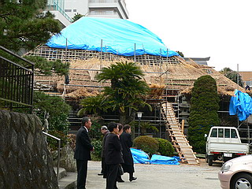

首大仏/静岡県熱海市
湯河原温泉にある福泉寺には首大仏と呼ばれる大仏さんがおわす。
湯河原の温泉街は神奈川県湯河原町と静岡県熱海市の県境にあり、泉福寺は熱海市サイドに位置している。
所在が神奈川県と間違えやすいため当サイトの県別表記には一応静岡、神奈川両県に表記しておきますね。
で、首大仏である。
県境である千歳川沿いの道を登っていくと、本堂が見えてくる。
藁葺きの屋根を葺きかえ中だった。
その積まれた藁の傍らに首大仏がいた。
サイズは2メートル程度だろうか。
首だけ、というから和歌山の首大仏みたいな生首状態を想像していたら肩まで付いててチョット胸像風。
ただし材質が違うので肩の部分は後補の可能性大だが。
首だけ大仏、という意外性もさることながら、この大仏さんの最大の特色はご覧の通りの御尊顔。
長い。あまりにも長い顔。妙な肉の付き方、我が国でこのような顔をしているのは…
三遊亭円楽！
エキゾチックという表現を超越してこれは最早異形にカテゴライズされてしかるべき御尊顔であるといえよう。
この大仏さん、何と陶製なのだ。
陶製なので色艶が大仏っぽくない、という点もさることながら、目玉も陶製なので目力ありまくり。
その過剰すぎる目力もこの大仏さんを異形たらしめている理由のひとつかと思われる。
耳の穴の中を覗くと中はがらんどうだった。
近づくとますます面白い御顔だ。何だか段々愉快な気分になってくる。螺髪も立派。貝のシッタカみたい。
この大仏の来歴は初代尾張藩主の妻の生涯を描いた「春姫さま」（藤澤茂弘※1著）に詳しい。
時は江戸時代初期、初代尾張藩主の徳川直義は春姫を娶ったが中々お世継ぎが出来ないでいた。
そんなある日、直義は下女の於尉との間に子を儲けてしまった。
その於尉の方が出産の際に「匹夫下賎の卑しい身分で、股からお産みするは万世の羞。腹からお生み申さん」と自らの腹を断ち切って出産したとか。どうだ、大毅。
今では到底考えられない、あまりにも壮絶な切腹出産で生まれたその子こそ二代尾張藩主、徳川光友なのである。
その後成長し、母の話を聞いた光友は母の供養のため、釈迦牟尼仏を名古屋城内に建立したのだという。
その釈迦牟尼仏こそが、この首大仏だったのだ。もちろんその頃は胴体もあったはず。
仏像の制作は当時直義が招いていた明の帰化人、陳元贇。
彼は明代末期の人で、書や陶芸、拳法、医学などをたしなむ文人であったそうだ。
義直を弔う定光寺の本堂（現在国重文）も設計しているというから技術者として招聘されたのだろう。
江戸初期の当時、コレだけ大きなモノを陶器で作り上げるのも凄いハナシだ。
ただし同じ陳元贇が作った守山区の大森寺の陶製仏像などは比較的普通の顔をしているる。
やっぱり大きいだけに顔の造作は難しかったようですね…
その後、戦時中までは名古屋城にいた大仏さんだが、戦後に訳あって現在の地に落ち着いたそうな。
なんで名古屋城にあった殿様の大仏さんが湯河原の地に来たのであろう。
どうやら名古屋から古物商に引き取られたというハナシも聞く。
これは私見だが陶器、特に茶器としては超レアな元贇焼の文句なしの大作だけに古物商が「いい仕事してますね〜」とか言って戦後のドサクサにまぎれて買い取ったと想像する。
しかし買い取ってみたものの大仏さんのアタマじゃ茶も沸かせない。せめてヘソでもあればよかったんですけどね〜。
てな訳で持て余した古物商が置き場に困ってお寺に寄贈したのではなかろうか？
…いや、全くの想像なんですけど…

その辺を住職に聞きたかったのだが、生憎法事の最中で話を伺えなかった。
見た目可笑しいが、実は瀬戸陶業の技術力と尾張徳川家の財力を見せつけてくれる大仏さんだったのだ。
※1 今回参考にさせていただいた「春姫さま」の著者である藤澤茂弘氏は現在、私が尊敬して止まない本邦コンクリ大仏の父、山田才吉翁の伝記小説「山才」を名古屋タイムズに連載中である。大仏舎弟を自覚する御仁は是非、氏の名前を覚えておいていただきたい。
2007.3.
珍寺大道場 HOME